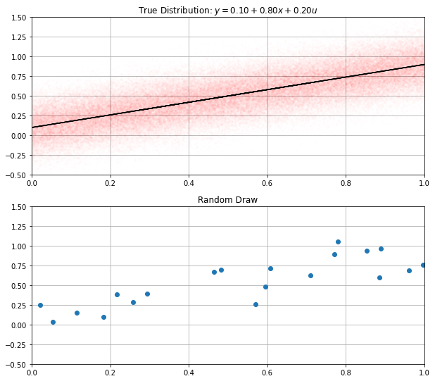
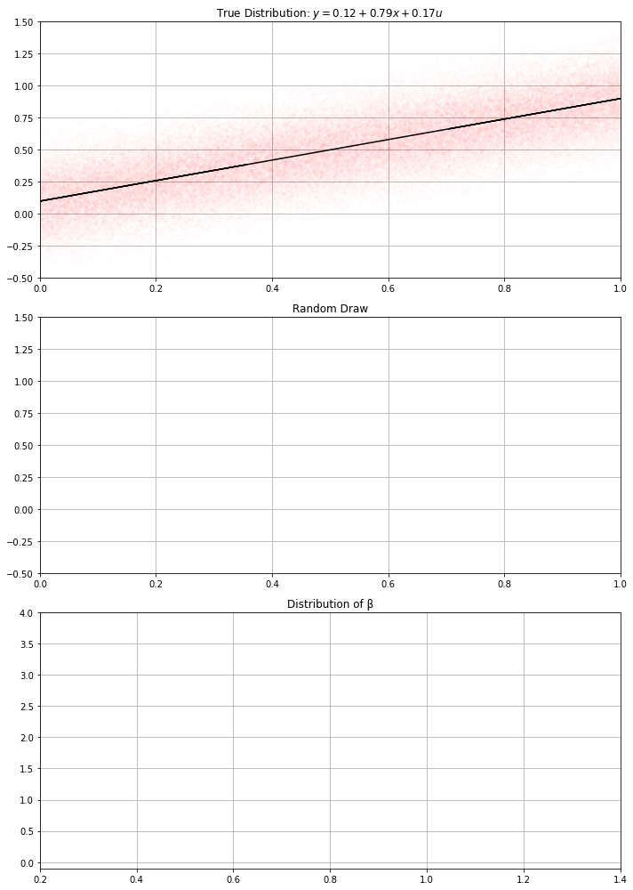
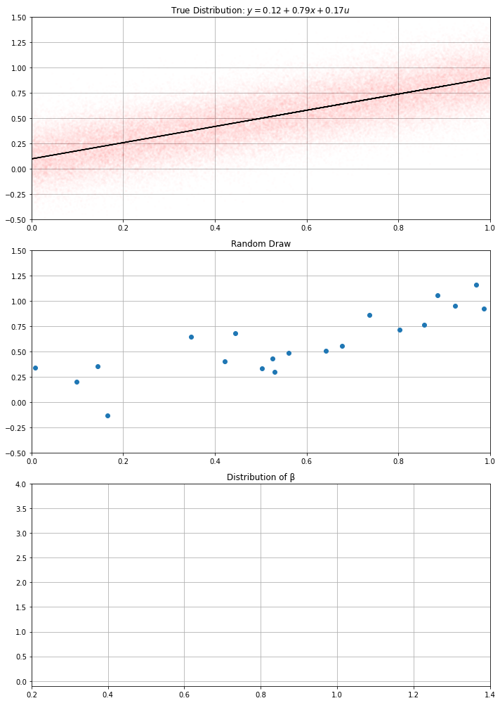
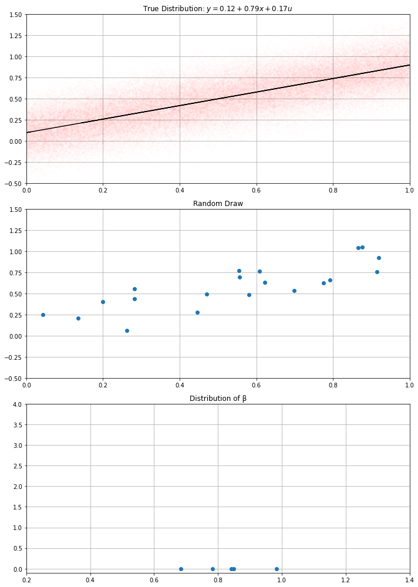
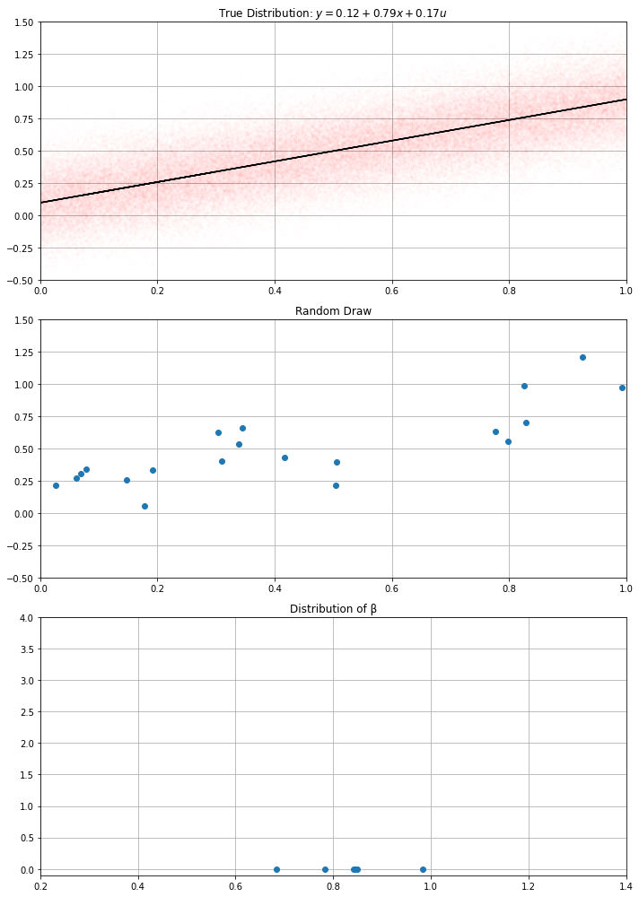
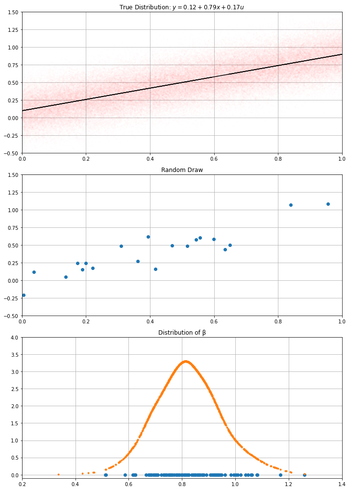

from matplotlib import pyplot as plt
import numpy as np
import pandas as pddef generate_dataset(μ1, μ2, α, β, σ, N=10):
xvec = np.random.uniform(μ1, μ2, N)
yvec = α + β*xvec + np.random.normal(size=N)*σ
return pd.DataFrame({'x': xvec, 'y': yvec})df = generate_dataset(0.0, 1.0, 0.1, 0.8, 0.1)plt.plot(df['x'], df['y'], 'o')
plt.grid()def plot_distribution(α, β, σ, N=100000, μ1=0.0, μ2=1.0):
xvec = np.random.uniform(μ1, μ2, N)
yvec = α + β*xvec + np.random.normal(size=N)*σ
plt.plot(xvec, yvec, '.r', alpha=0.005)
plt.plot(xvec, α + β*xvec, color='black')
# missing ridge lineimport statsmodelsμ1 = 0
μ2 = 1.0
α = 0.1
β = 0.8
σ = 0.2
N = 20
K = 1000import statsmodels.formula.api as smfdf = generate_dataset(μ1, μ2, α, β, σ, N=N)res = smf.ols(formula='y ~ x + 1', data=df).fit()
params = res.params
αhat = params['Intercept']
βhat = params['x']
σhat = res.resid.std()res.summary()| Dep. Variable: | y | R-squared: | 0.692 |
|---|---|---|---|
| Model: | OLS | Adj. R-squared: | 0.675 |
| Method: | Least Squares | F-statistic: | 40.48 |
| Date: | Tue, 26 Jan 2021 | Prob (F-statistic): | 5.41e-06 |
| Time: | 04:02:36 | Log-Likelihood: | 7.6662 |
| No. Observations: | 20 | AIC: | -11.33 |
| Df Residuals: | 18 | BIC: | -9.341 |
| Df Model: | 1 | ||
| Covariance Type: | nonrobust |
| coef | std err | t | P>|t| | [0.025 | 0.975] | |
|---|---|---|---|---|---|---|
| Intercept | 0.1210 | 0.077 | 1.565 | 0.135 | -0.041 | 0.283 |
| x | 0.7941 | 0.125 | 6.362 | 0.000 | 0.532 | 1.056 |
| Omnibus: | 1.410 | Durbin-Watson: | 1.507 |
|---|---|---|---|
| Prob(Omnibus): | 0.494 | Jarque-Bera (JB): | 0.890 |
| Skew: | -0.081 | Prob(JB): | 0.641 |
| Kurtosis: | 1.979 | Cond. No. | 4.20 |
Notes:
[1] Standard Errors assume that the covariance matrix of the errors is correctly specified.
res.predict(df['x'])0 0.326200
1 0.211704
2 0.798819
3 0.603306
4 0.573319
5 0.823919
6 0.740622
7 0.503227
8 0.292622
9 0.489566
10 0.138720
11 0.355157
12 0.594171
13 0.883917
14 0.266229
15 0.827021
16 0.912376
17 0.163088
18 0.684858
19 0.732782
dtype: float64for i in [1,2,3]:
fig = plt.figure(figsize=(10,14))
plt.subplot(311)
plot_distribution(0.1, 0.8, 0.2)
plt.grid()
plt.title(f"True Distribution: $y = {α:.2f} + {β:.2f} x + {σ:.2f} u$")
plt.xlim(0,1)
plt.ylim(-0.5, 1.5)
plt.subplot(312)
plt.xlim(0,1)
plt.ylim(-0.5, 1.5)
if i>=2:
plt.plot(df['x'], df['y'], 'o')
if i>=3:
plt.plot(df['x'], res.predict(), label=f'$\hat{{α}}={αhat:.2f}; \hat{{β}}={βhat:.2f}$')
plt.legend(loc='lower right')
plt.title("Random Draw")
plt.grid()
plt.savefig(f"regression_uncertainty_{i}.png")
import scipy.statsdatasets = [generate_dataset(μ1, μ2, αhat, βhat, σhat, N=N) for i in range(K)]
all_params = [smf.ols(formula='x ~ y + 1', data=df).fit() for df in datasets]
αvec = np.array( [e.params['Intercept'] for e in all_params] )
βvec = np.array( [e.params['y'] for e in all_params] )gkd = scipy.stats.kde.gaussian_kde(βvec)for i in [1,2,3,4,5,6,7,8,9,10,100]:
fig = plt.figure(figsize=(10,14))
plt.subplot(311)
plot_distribution(0.1, 0.8, 0.2)
plt.grid()
plt.title(f"True Distribution: $y = {αhat:.2f} + {βhat:.2f} x + {σhat:.2f} u$")
plt.xlim(0,1)
plt.ylim(-0.5, 1.5)
plt.subplot(312)
plt.xlim(0,1)
plt.ylim(-0.5, 1.5)
df = datasets[i]
if i>=2:
plt.plot(df['x'], df['y'], 'o')
plt.title("Random Draw")
plt.grid()
plt.subplot(313)
if i==3:
plt.plot(βvec[i], βvec[i]*0, 'o')
if i>4:
plt.plot(βvec[3:i], βvec[3:i]*0, 'o')
if i>10:
xx = np.linspace(0.2, 1.4, 10000)
plt.plot( βvec, gkd.pdf(βvec), '.')
plt.title("Distribution of β")
plt.xlim(0.2, 1.4)
plt.ylim(-0.1, 4)
plt.grid()
plt.tight_layout()
plt.savefig(f"random_estimates_{i}.png")





plt.plot( βvec, βvec*0, 'o')